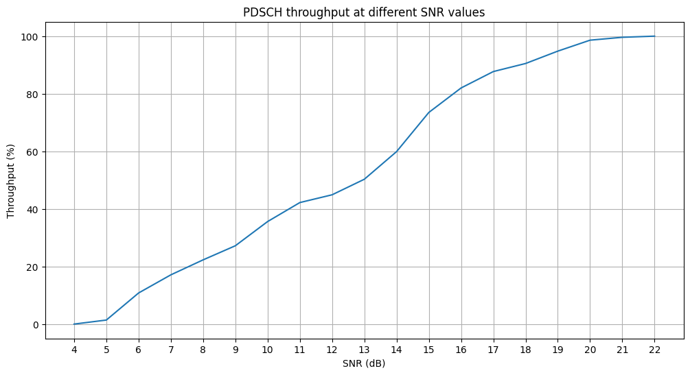

NR PDSCH Throughput with HARQ
This notebook demonstrates how to measure the physical downlink shared channel (PDSCH) throughput of a 5G New Radio (NR) link, as specified in the 3GPP NR standard. It is similar to the MATLAB example NR PDSCH Throughput and showcases the use of the following NeoRadium features:
Carrier and Bandwidth Part classes.
PDSCH and DMRS objects.
LDPC and HARQ capabilities.
CDL channel model and extraction of channel matrix and precoding matrix.
Resource grids, populating them, and applying channel models to them.
[2]:
import numpy as np
import scipy.io
import time
import matplotlib.pyplot as plt
from neoradium import Carrier, PDSCH, CdlChannel, AntennaPanel, LdpcEncoder, random, HarqEntity, SnrScheduler
[3]:
# Create a Carrier object with 51 resource blocks and 30KHz subcarrier spacing
carrier = Carrier(numRbs=51, spacing=30)
carrier.print()
bwp = carrier.curBwp # The only bandwidth part in the carrier
Carrier Properties:
Cell Id: 1
Bandwidth Parts: 1
Active BWP: 0
Bandwidth Part 0:
Resource Blocks: 51 RBs starting at 0 (612 subcarriers)
Subcarrier Spacing: 30 kHz
CP Type: normal
Bandwidth: 18.36 MHz
symbolsPerSlot: 14
slotsPerSubFrame: 2
nFFT: 1024
frameNo: 0
slotNo: 0
[4]:
# Initialize the modulation and code rate.
modulation = '16QAM'
codeRate = 490/1024
# Create a PDSCH onject with 2 tramsmission layers
pdsch = PDSCH(bwp, interleavingBundleSize=0, numLayers=2, nID=carrier.cellId)
pdsch.setDMRS(prgSize=0, configType=2, additionalPos=2, otherCdmGroups=[])
pdsch.print()
# Create an LDPC encoder object using base graph 1 and passing modulation and code rate settings
ldpcEncoder = LdpcEncoder(baseGraphNo=1, modulation=modulation, txLayers=pdsch.numLayers, targetRate=codeRate)
# HARQ configuration:
harqType = "IR" # "IR" -> "Incremental Redundancy", "CC" -> "Chase Combining"
numProc = 16 # Number of HARQ processes
harq = HarqEntity(ldpcEncoder, harqType, numProc) # Create the HARQ entity
harq.print()
# Create the CDL channel model
channel = CdlChannel(bwp, 'C', delaySpread=300, carrierFreq=4e9, dopplerShift=5,
txAntenna = AntennaPanel([1,4], polarization="x"), # 8 TX antenna
rxAntenna = AntennaPanel([1,1], polarization="+", beamWidth=[75,360]), # 2 RX antenna, Omni-directional
rxOrientation = [0,0,0]) # Default is [180,0,0]
print(channel)
PDSCH Properties:
mappingType: A
nID: 1
rnti: 1
numLayers: 2
numCodewords: 1
modulation: 16QAM
portSet: [0, 1]
symSet: 0 1 2 3 4 5 6 7 8 9 10 11 12 13
prbSet: 0 1 2 3 4 5 6 7 8 9 10 11 12 13 14 15 16 17 18 19
20 21 22 23 24 25 26 27 28 29 30 31 32 33 34 35 36 37 38 39
40 41 42 43 44 45 46 47 48 49 50
interleavingBundleSize: 0
PRG Size: Wideband
Bandwidth Part:
Resource Blocks: 51 RBs starting at 0 (612 subcarriers)
Subcarrier Spacing: 30 kHz
CP Type: normal
Bandwidth: 18.36 MHz
symbolsPerSlot: 14
slotsPerSubFrame: 2
nFFT: 1024
frameNo: 0
slotNo: 0
DMRS:
configType: 2
nIDs: []
scID: 0
sameSeq: 1
symbols: Single
typeA1stPos: 2
additionalPos: 2
cdmGroups: [0, 0]
deltaShifts: [0, 0]
allCdmGroups: [0]
symSet: [ 2 7 11]
REs (before shift): [0, 1, 6, 7]
epreRatioDb: 0 (dB)
HARQ Entity Properties:
HARQ Type: IR
Num. Processes: 16
Num. Codewords: 1
RV sequence: [0, 2, 3, 1]
maxTries: 4
Encoder:
Base Graph: 1
Modulation: 16QAM
Number of layers: 2
Target Rate: 0.478515625
Decoder:
Base Graph: 1
Modulation: 16QAM
Number of layers: 2
CDL-C Channel Properties:
carrierFreq: 4 GHz
normalizeGains: True
normalizeOutput: True
txDir: Downlink
filterLen: 16 samples
delayQuantSize: 64
stopBandAtten: 80 dB
dopplerShift: 5 Hz
coherenceTime: 84.628 milliseconds
delaySpread: 300 ns
ueDirAZ: 0.0°, 90.0°
Cross Pol. Power: 7 dB
angleSpreads: 2° 15° 3° 7°
TX Antenna:
Total Elements: 8
spacing: 0.5𝜆, 0.5𝜆
shape: 1 rows x 4 columns
polarization: x
RX Antenna:
Total Elements: 2
spacing: 0.5𝜆, 0.5𝜆
shape: 1 rows x 1 columns
polarization: +
hasLOS: False
NLOS Paths (24):
Delays (ns): 0.000 62.97 66.57 69.87 65.28 190.9 193.4 196.8 197.5 238.0 246.3 280.0
368.5 392.4 651.1 813.1 1277. 1380. 1647. 1682. 1891. 1991. 2112. 2595.
Powers (dB): -4.40 -1.20 -3.50 -5.20 -2.50 0.000 -2.20 -3.90 -7.40 -7.10 -10.7 -11.1
-5.10 -6.80 -8.70 -13.2 -13.9 -13.9 -15.8 -17.1 -16.0 -15.7 -21.6 -22.8
AODs (Deg): -47 -23 -23 -23 -41 0 0 0 73 -64 80 -97
-55 -64 -78 103 99 89 -102 92 93 107 119 -124
AOAs (Deg): -101 120 120 120 -128 170 170 170 55 66 -48 47
68 -69 82 31 -16 4 -14 10 6 1 -22 34
ZODs (Deg): 97 99 99 99 101 99 99 99 105 95 106 94
104 104 93 104 95 93 92 107 93 93 105 108
ZOAs (Deg): 88 72 72 72 70 75 75 75 67 64 71 60
91 60 61 101 62 67 53 62 52 62 58 57
[5]:
# Print header lines:
print("SNR(dB) Tx Bits Rx Bits Throughput(%) TX Blocks RX Blocks BLER(%) Retry Mean time(Sec.)")
print("------- ---------- ---------- ------------- --------- --------- ------- ---------- ----------")
snrScheduler = SnrScheduler(6,1, loSnrVal=0, hiSnrVal=100) # Start at 6 dB, use increments of 0.2 dB
numSlots = 1000 # The number of slots transmitted for each SNR value
for snrDb in snrScheduler:
random.setSeed(123)
channel.restart() # Reset the channel and the bandwidth part associated with it
harq.reset() # Reset HARQ state and buffers
t0 = time.time() # Start the timer
for s in range(numSlots): # The inner loop doing 'numSlot' transmissions
grid = bwp.createGrid(pdsch.numLayers) # Create a resource grid with 2 layers
pdsch.allocateResources(grid) # Allocat PDSCH resources including DMRS
txBlockSizes = pdsch.getTxBlockSize(codeRate) # Calculate the Transport Block Size (TBS)
numBits = pdsch.getBitSizes(grid) # Total number of PDSCH data bits available in the resource grid
# Preparing the transport blocks
txBlocks = [] # Transport blocks, one per codeword.
for c in range(harq.numCW):
if harq.needNewData[c]: # New transmission.
txBlocks += [ random.bits(txBlockSizes[c]) ] # Create random bits for new transmissions
else: # Retransmission
txBlocks += [ None ] # Set transport block to None to indicate a retransmission
# The following function returns a coded, rate-matched bitstream, ready for transmission/retransmission
rateMatchedCodeBlocks = harq.getRateMatchedCodeBlocks(txBlocks, numBits)
pdsch.populateGrid(grid, rateMatchedCodeBlocks) # Map/modulate the data to the resource grid
channelMatrix = channel.getChannelMatrix() # Get channel matrix (Assuming perfect channel estimation)
precoder = pdsch.getPrecodingMatrix(channelMatrix) # Get precoding matrix based on the channel matrix
precodedGrid = grid.precode(precoder) # Perform precoding
rxGrid = precodedGrid.applyChannel(channelMatrix) # Apply the channel to the precoded resource (Freq. domain)
noisyRxGrid = rxGrid.addNoise(snrDb=snrDb, useRxPower=True) # Add noise (Using RX power to calcualte Noise Power)
# Calculate the channel matrix with the precoding effect. This is assuming perfect channel estimation. For practical
# channel estimation we can use the DMRS reference signals and use the "estimateChannelLS" method of resource grid object.
precodingChannelMatrix = channelMatrix @ precoder[None,...]
# Use the channel matrix (with precoding effect) to equalize the received resource grid
eqGrid, llrScales = noisyRxGrid.equalize(precodingChannelMatrix)
# Demodulate the equalized resource grid (eqGrid) to get the Log-Likelihood values
llrs = pdsch.getLLRsFromGrid(eqGrid, pdsch.dataIndices, llrScales)
# Use HARQ entity to decode the LLRs to transport blocks
decodedTxBlocks, blockErrors = harq.decodeLLRs(llrs, txBlockSizes, numIter=2)
# Get the statistics from HARQ entity and print them:
print("\r%-7d %-10d %-10d %-13.2f %-9d %-9d %-7.2f %-10.2f %-10.2f"
%(snrDb, harq.totalTxBits, harq.totalRxBits, harq.throughput, harq.totalTxBlocks,
harq.totalRxBlocks, harq.bler, harq.meanTries, time.time()-t0), end='')
channel.goNext()
harq.goNext()
snrScheduler.setData(harq.throughput)
print("")
SNR(dB) Tx Bits Rx Bits Throughput(%) TX Blocks RX Blocks BLER(%) Retry Mean time(Sec.)
------- ---------- ---------- ------------- --------- --------- ------- ---------- ----------
6 30216000 3263328 10.80 1000 108 89.20 3.54 158.70
5 30216000 423024 1.40 1000 14 98.60 3.94 158.07
4 30216000 0 0.00 1000 0 100.00 4.00 159.37
3 30216000 0 0.00 1000 0 100.00 4.00 159.64
7 30216000 5166936 17.10 1000 171 82.90 3.03 161.71
8 30216000 6738168 22.30 1000 223 77.70 2.61 167.97
9 30216000 8218752 27.20 1000 272 72.80 2.19 173.80
10 30216000 10756896 35.60 1000 356 64.40 1.62 178.26
11 30216000 12751152 42.20 1000 422 57.80 1.33 184.86
12 30216000 13566984 44.90 1000 449 55.10 1.20 188.20
13 30216000 15198648 50.30 1000 503 49.70 0.98 194.23
14 30216000 18099384 59.90 1000 599 40.10 0.67 204.43
15 30216000 22208760 73.50 1000 735 26.50 0.36 222.47
16 30216000 24777120 82.00 1000 820 18.00 0.22 231.26
17 30216000 26499432 87.70 1000 877 12.30 0.14 238.67
18 30216000 27345480 90.50 1000 905 9.50 0.10 241.45
19 30216000 28644768 94.80 1000 948 5.20 0.05 246.40
20 30216000 29792976 98.60 1000 986 1.40 0.01 251.06
21 30216000 30095136 99.60 1000 996 0.40 0.00 252.46
22 30216000 30216000 100.00 1000 1000 0.00 0.00 252.83
23 30216000 30216000 100.00 1000 1000 0.00 0.00 252.05
[6]:
# Draw the throughput graph:
snrDbs, throughputs = snrScheduler.getSnrsAndData()
plt.figure(figsize=(12, 6))
plt.plot(snrDbs, throughputs)
plt.title("PDSCH throughput at different SNR values");
plt.grid()
plt.xlabel("SNR (dB)")
plt.xticks(snrDbs)
plt.ylabel("Throughput (%)")
plt.show()
